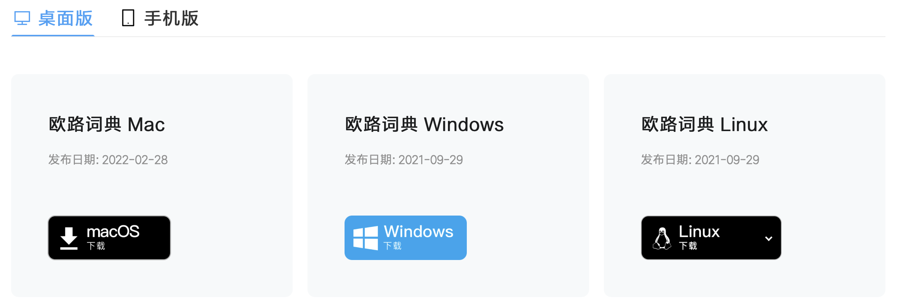
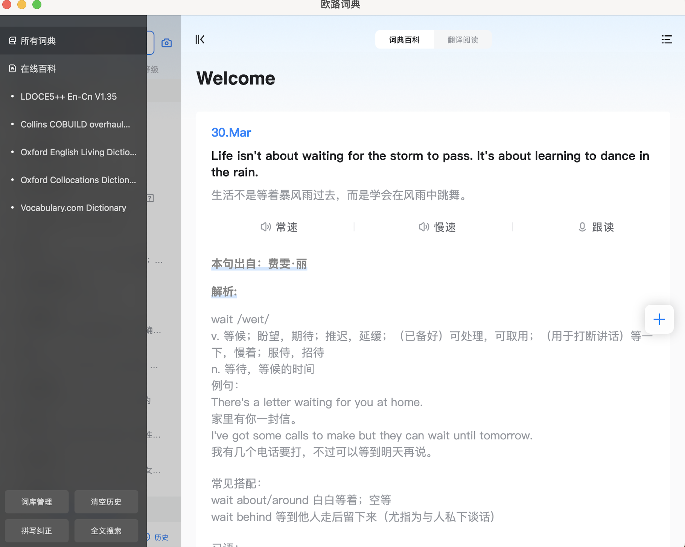
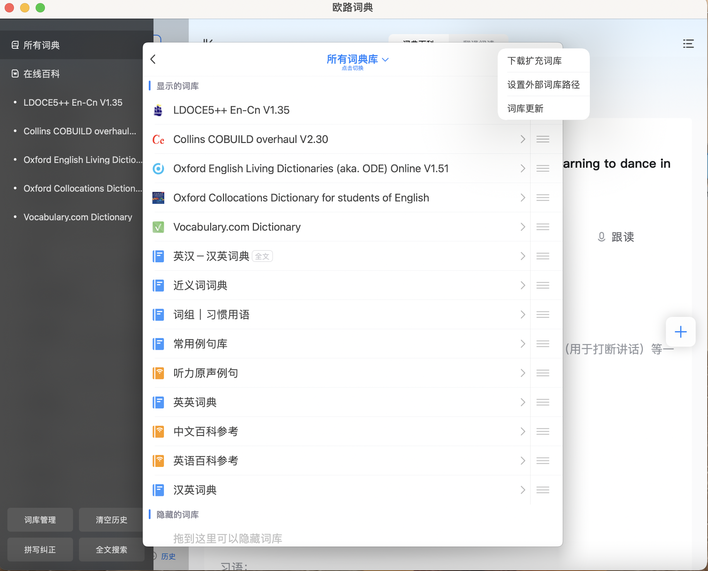

访问地址：https://www.eudic.net/v4/en/app/download

欧路词典的每部扩展词典一般包含两个文件：mdx文件和mdd文件。
mdx文件是标准的电子词典文件格式，里面储存的是一部词典的文本信息。
mdd文件里面包含的是声音和图片。
有的词典只有一个mdx文件，没有mdd文件，就代表这部词典没有单词发音，不能点击发声。
依次点击欧路词典主界面右上角“工具”---“词库管理”。
点击“安装词典”，找到词库所在文件夹。
按住 CRTL键同时选择一部词典的mdd文件和mdx文件，点击“打开” （注意mdd和mdx这两个文件的文件名必须保持一致）。
出现询问是否安装词典的对话框，点击“安装词库”，即可完成扩展词库的安装。
安装完全部词库后，可以在词库管理器页面，单击选中任一词库，然后点击上方工具栏内的”上移“”下移“按钮，调整此词库在查询单词释义时出现的先后位置。
欧路词典Mac客户端安装扩展包时会提示“安装词典扩展包需要升级到专业版”，价格是168元，有条件的可以购买专业版，享受屏幕取词、划词搜索等功能。
如果没有以上需求，只是想使用最基本的查词、生词本等功能，可以在Mac上安装ipad版，亲测可以正常使用。
ipad版可以免费添加词典扩展包，方法如下：
找到app的“词库管理”，点开右上角的“设置外部词库路径”，选择已经下载好的词典扩展包，即可使用。此外还可以设置词典的优先级，选择查词时各词典释义出现的先后位置。

